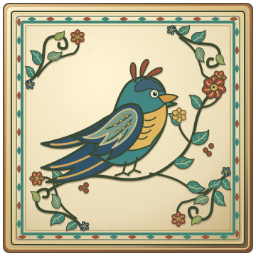
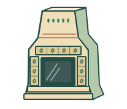

Москва · Основано в 1998 году
Искусство
изразца
В мастерской Сергея Лебедева лепят и расписывают изразцы вручную. Из них складываются печи, камины и целые истории в керамике.

Образцы из каталога
Роспись и рельеф

Изразцовые камины
Камин
«Алконост»
Угловой камин с закрытой топкой. Птицы и растительный орнамент украшают часть фасада.
Портфолио
Керамика в доме


В мастерской
Как рождается
изразец
У изразца есть лицевая пластина и румпа — глиняная коробка с обратной стороны. Её формуют вместе с основой.
- Форма и глинаРисунок переводят в рельеф. Глину вдавливают в гипсовую форму.
- Первый обжигОтформованный изразец сушат, обрабатывают кромки и обжигают.
- Роспись и глазурьЦвет наносят кистью. Последующий обжиг закрепляет поливу.
Индивидуальный заказ
Составьте задание мастеру
Соедините рисунок, форму и размеры. В конце получится черновик для обсуждения с керамистом.
- Роспись
- Геометрия
- Задание
Геометрия и объём работ
Ваше задание мастеру
 Андреевский монастырь, Москва
Андреевский монастырь, МоскваИстория мастерской
Начало
в монастыре
В 1998 году Сергей Лебедев собрал мастерскую при Андреевском монастыре. Первой задачей стало воссоздание изразцового убранства XVII века на надвратной церкви Андрея Стратилата.
О мастерской и её работахУсловия заказа
От замера до монтажа
Замер и эскиз
Размеры можно снять самостоятельно или пригласить замерщика. На сайте мастерской выезд для замера указан как бесплатный.
Оплата и получение
Мастерская принимает наличную и безналичную оплату. Возможны самовывоз у м. Академическая и доставка транспортной компанией.
Раскладка и монтаж
Перед установкой мастера сверяют оттенки и размеры готовой партии. Монтаж можно отдельно включить в задание.
Шоурум в Москве
В гости
к мастерам
м. Академическая, проспект 60-летия Октября,
д. 11А, стр. 11
Пн–пт 10:00–19:00 · Сб 10:00–16:00.
Встречи по предварительной договорённости.
Задание мастеру
Демонстрационная форма. Данные остаются на этой странице. Мастерская не получает заявку, запись не создаётся.
Черновик готов
Задание осталось у вас на экране. Для реального заказа свяжитесь с мастерской по телефону или почте.